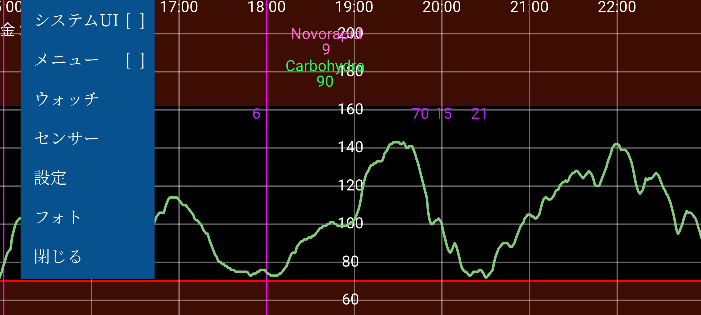
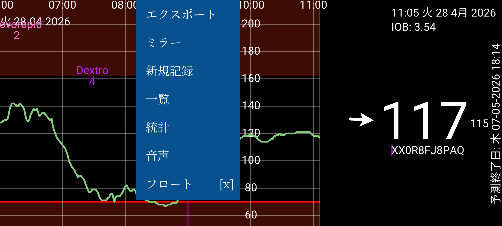
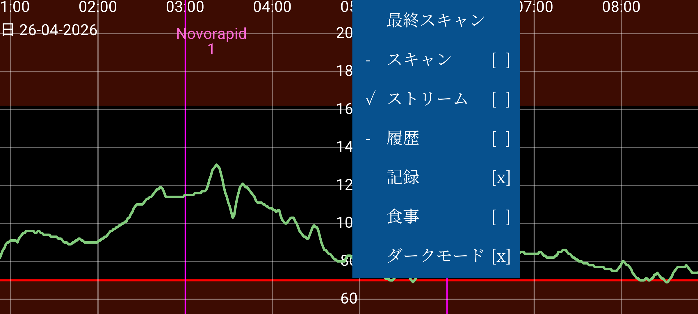
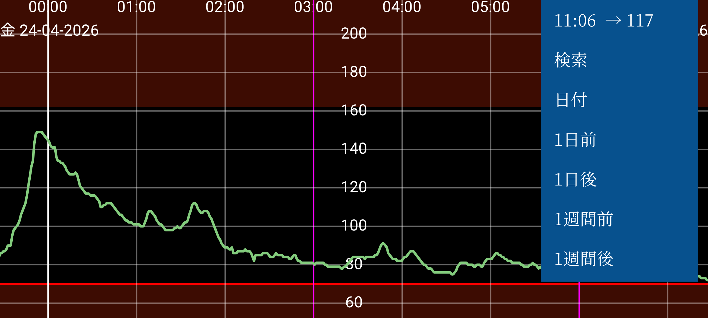

ar be de es fr hi it ja nl pl pt ru tr uk uz zh en
Jugglucoは糖尿病の方の血糖管理のためのアプリです。FreeStyle Libre (0 と 2) センサーを (NFC で) スキャンでき、FreeStyle Libre 2、2+、3、3+、Sibionics GS1Sb、Dexcom G7/ONE+、Accu-Chek SmartGuide、CareSens Air、Linx/Lumiflex/Aidex X センサーから (Bluetooth で) 血糖値を受信できます。
プログラムを初めて実行するときは、FreeStyle Libre 2 センサーをスマートフォンの NFC センサーにかざしてスキャンできます。その後 Juggluco は FreeStyle Libre 2 センサーと Bluetooth 接続を確立しようとし、スキャンせずに毎分血糖値を受信します。Abbott の Libre 3 アプリで有効化された FreeStyle Libre 3 または 3+ センサーを引き継ぐには、センサーを有効化するために使用した Libreview アカウント情報を 設定 → データ交換 → Libreview で指定し、「アカウント ID の取得」を押し、アカウント ID が到着するのを待ってからスキャンする必要があります。FreeStyle Libre 3 リーダーや、Libre 2 と Libre 3 両方用の米国版 Libre アプリで開始された Libre 3 センサーを引き継ぐことはできません。Juggluco は記載されたすべてのセンサーを自分で有効化することもできます (ただし Accu-Chek SmartGuide は例外となる可能性があります)。
Sibionics GS1Sb、Dexcom G7/ONE+、Accu-Chek SmartGuide、CareSens Air、Linx/Lumiflex/Aidex X センサーに接続するには、左メニュー → 写真でデータマトリクスをスキャンする必要があります。Dexcom G7/ONE+ センサーは Bluetooth でペアリングされ、ほとんどのスマートフォンで承認する必要があります。承認は非常に素早く行う必要があり、そうしないと再び 5 分待つ必要があります。画面がオフにならないようにしてください。Samsung Galaxy Watch 4 と 7 ではペアリングに同意する必要はありません。使用済みの Dexcom G7/ONE+ センサーは血糖値の記録停止後も Bluetooth で長時間有効のままです。Juggluco が誤ったセンサーとペアリングを試みないように、古いセンサーを Bluetooth の届かない場所(例えば 15 メートル離れた電子レンジ内など)に置いてください。特に古いセンサーが新しいセンサーと同じ PIN コードを持つ場合は重要です。以前にセンサーに接続したアプリやデバイスをオフにしてください(強制停止またはアンインストール)。Accu-Chek SmartGuide センサーのペアリング中には PIN を入力する必要があります。
センサーへの接続の詳細については https://www.juggluco.nl/Juggluco/sensors を参照してください。
プログラムには 4 つの メニューがあり、表示の空白部分をタッチするとメニューを開けます。画面の左 4 分の 1 をタッチすると左メニューが、中央部の左側をタッチすると 2 つ目のメニューが、中央部の右側をタッチすると 3 つ目のメニューが、画面の右 4 分の 1 をタッチすると 4 つ目のメニューが開きます。
メニュー 4: 移動 (右)
15:10 ↗ 93
検索
日付
1日前
1日後
1週間前
1週間後
画面上を左右に動かすと、曲線を左右に移動できます。右側の 移動メニューで動かすこともできます。日付を選択するには 日付 を、血糖値や入力された数値を検索するには 検索 を使用します。右メニューの最初の項目は現在の時刻で、選択するとグラフの右端(現在)へジャンプします。
設定で 血糖値を手動でスケール が設定されている場合、画面上半分で上下に動かすとグラフの最大値が、画面下半分で上下に動かすと最小値が変わります。設定で 時間を手動でスケール が設定されている場合、2 本指の距離を変えることで画面に表示する時間量を増減できます。
メニュー 3: 表示
最終スキャン
スキャン [x]
ストリーム [x]
履歴 [x]
記録 [x]
食事 [ ]
ダークモード [x]
中央の右のメニューには表示オプションが含まれています。最後のスキャンを表示するには最初の項目をタッチします。スキャン の後の十字はスキャンがグラフに表示されることを意味します。スキャンは Libre 0 や 2 センサーをスキャンしたときに得られる現在の血糖値です。スキャンによりセンサーから過去 8 時間の 15 分間隔の測定値もスマートフォンに転送されます。これらの値の表示は 履歴 をタッチして制御できます。Libre 3 センサーは履歴値を Bluetooth 経由で 5 分ごとに送信します。ストリーム は FreeStyle Libre 2 と 3 センサーから Bluetooth で毎分このアプリに送信される血糖値を表します。
あらゆる種類の数値を(任意のラベルで)入力して、インスリン、炭水化物、運動を記録できます。これらは指定された日時の血糖グラフ上に固定の高さで表示されます。グラフの点や入力された数値をタッチすると、その項目に関する情報が表示されます。入力した数値を長押しすると編集できます。左中メニューの数値一覧から対応するデータ要素をタッチして編集することもできます。記録は入力された数値の表示を決定します。設定では、これらの数値に使用したい ラベルを指定できます。数値の 1 つの上に対応するラベルが表示されます。
メニュー 2: 中央の左
エクスポート
ミラー
新規記録
一覧
統計
音声
フロート [ ]
中央の左メニューの 新規記録 をタッチしてこれらの数値を入力できます。エクスポートはデータを .tsv (タブ区切り値) 形式でファイルに保存します。ミラーは IP/TCP 経由で別の端末で動作するこのアプリにデータを送信し、同じ情報を表示できるようにします。一覧は入力された数値の一覧を表示します。Juggluco が Bluetooth 経由で十分な血糖値を受信していれば、統計をタッチしていくつかの統計を確認できます。特定の血糖範囲の測定の割合、血糖管理指標 (HbA1c の予測値)、血糖変動、1 日のすべての瞬間で値の 100%、95%、75%、50%、25%、0% がそれより下にある血糖値を示す概要グラフが表示されます。音声では、Juggluco に到着する血糖値、タッチしたグラフの要素、メッセージを読み上げさせることができます。フロートは フローティング血糖をオンにします。他のアプリの上に画面に存在する血糖値です。設定で色とサイズを変更できます。
メニュー 1: 左
システム UI [ ]
メニュー [ ]
ウォッチ
センサー
設定
写真
閉じる
左メニューには、血糖単位を mmol/L または mg/dL に設定し、ラベルを指定し、血糖アラームと薬リマインダーと表示範囲を設定する 設定 があります。システム UI は Android のコントロールとステータスバーを表示するかどうかを決定します。ウォッチでは、Juggluco がさまざまなスマートウォッチにデータを送信するように指定できます。センサーでは、センサーとの接続状況を確認できます。メニュー をタッチすると、上記のすべてのメニューが同時に talkback で読める形で表示されます。閉じるは Juggluco を終了するために使用できます。